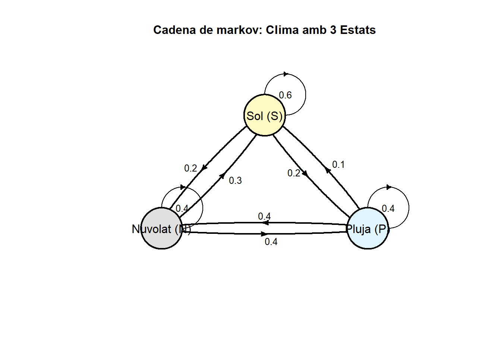
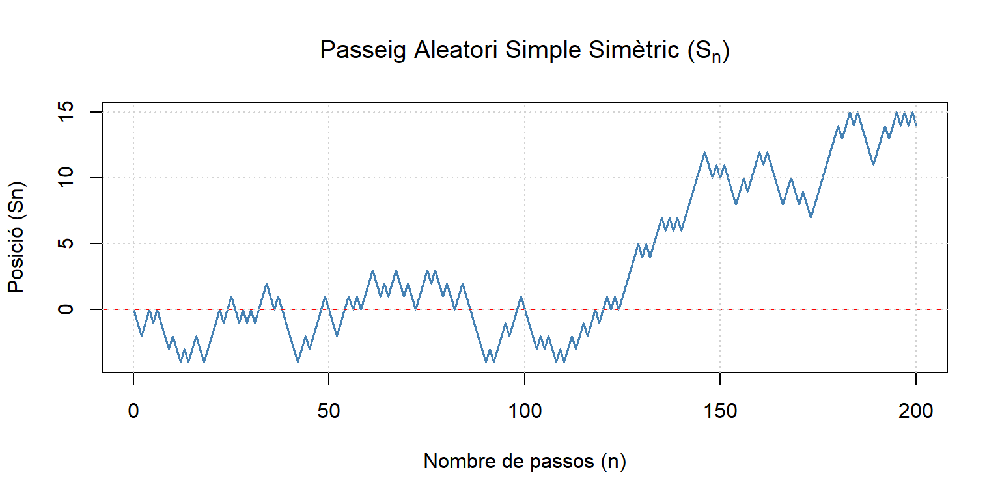
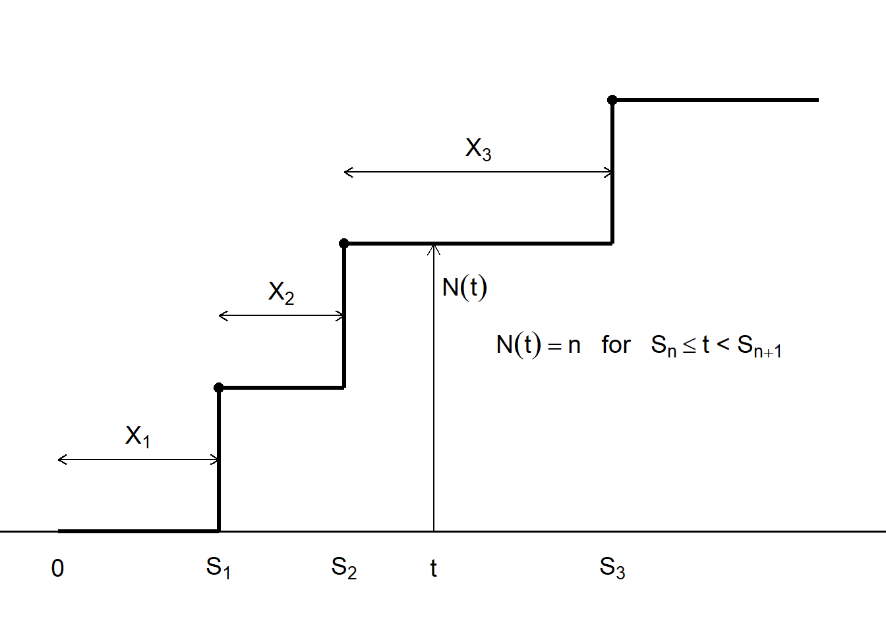
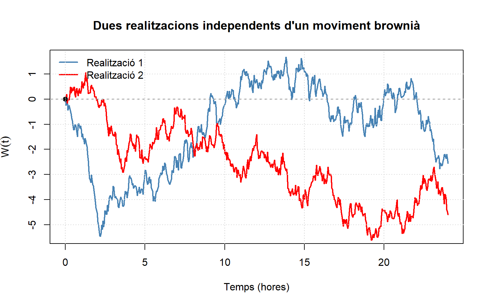

5 Principals tipus de Processos estocàstics.
En el tema passat hem introduït els principals conceptes dels processos estocàstics, que neixen de la necessitat d’analitzar col·leccions de variables aleatòries ordenades cronològicament. En la pràctica modelar la dependència temporal es un repte, i els models es simplifiquen utilitzant diverses propietats per tal de no avaluar l’història completa que normalment es matemàticament inviable. En aquest tema avaluarem alguns tipus de processos estocàstics que s’ajusten a nombroses situacions reals.
5.1 Cadenes de Markov.
En el tema anterior vàrem definir un procés de Markov com aquell que per conéixer l’estat futur del procés només cal conèixer l’estat actual i oblidarmos del passat.
\[ P(X_{t_n}=x_n |X_{t_{n-1}}=x_{n-1}, \cdots ,X_{t_0}=x_0)=P(X_{t_n}=x_n|X_{t_{n-1}}=x_{n-1}) \]
Definició 5.1 Cadena de Markov
Si un procés estocàstic DTDV, és a dir discret amb el temps i amb un nombre finit d’estats compleix la propietat de Markov es una cadena de Markov
Es costum designar com a \(X_0\) l’inici de la cadena. Considerem com espai d’estats de la cadena al suport de les variables del procés \(X_n\), \(S=(s_1,...,s_k)\) on \(n \in \mathbb{N} \cup \{0\}\)
Per caracteritzar les cadenes de Markov necessitem definir les probabilitats inicials i de transició.
Probabilitats inicials
Les probabilitats inicials són les probabilitats de cada un dels possibles estat a l’inici del procés
\[ \pi_i=P(X_0=s_i), \quad \pi_i \geq 0, \forall i=1,...,k, \qquad \Sigma_i \pi_i=1 \tag{5.1} \] Probabilitats de transició
Designarem com a probabilitats de transició d’un pas a ,la probabilitat condicionada de estar en un estat \(s_j\) en un moment \(n+1\) sabent que s’estava en un estat \(s_i\) en el moment anterior \(n\)
\[ \pi_{ij}=P(X_n+1=s_j \mid X_n+1=s_i ) \tag{5.2} \]
Si el valor de la probabilitat de transició \(\pi_{ij}\) no depen del tems, es a dir la probabilitat de passar d’un estat a un altre només depen de l’estat i no del temps, tenim probabilitats de transició estacionaries ó homogènies.
\[ p_{ij}=P(X_n+1=s_j \mid X_n+1=s_i ) \quad \text{ per a n=0,1,2,} \cdots \] A més les distribucions finito-dimensionals s’obtenen fàcilment a partir de les probabilitats de transició si fem us de la propietat de Markov i el teorema de factorització
\[ \begin{aligned} & P(X_n = s_{i_n}, X_{n-1} = s_{i_{n-1}}, \dots, X_0 = s_{i_0}) \\ &= P(X_n = s_{i_n} \mid X_{n-1} = s_{i_{n-1}}, \dots, X_0 = s_{i_0}) \cdots P(X_1 = s_{i_1} \mid X_0 = s_{i_0}) P(X_0 = s_{i_0}) \\ &= P(X_n = s_{i_n} \mid X_{n-1} = s_{i_{n-1}}) \cdots P(X_1 = s_{i_1} \mid X_0 = s_{i_0}) P(X_0 = s_{i_0}) \\ &= p_{i_{n-1}, i_n} \cdot p_{i_{n-2}, i_{n-1}} \cdots p_{i_0, i_1} \cdot \pi_{i_0} \end{aligned} \]
Definició 5.2 Matriu de transició
La cadena de Markov discreta, \(X_n\), queda completament especificada amb les probabilitats inicials i l’anomenada matriu de transició d’un pas, que recull les probabilitats del mateix nom:
\[ P = \begin{pmatrix} p_{11} & p_{12} & \cdots & p_{1k} \\ p_{21} & p_{22} & \cdots & p_{2k} \\ \vdots & \vdots & \vdots & \vdots \\ p_{k1} & p_{k12} & \cdots & p_{kk} \end{pmatrix} \tag{5.3} \]
D’acord con el significat de \(p_{ij}\), les files de la matriu sumen la unitat:
\[ \sum_{j} p_{ij} = 1, \quad \forall i=1,...,k \]
Definició 5.3 Una matriu quadrada amb tots els elements no negatius i tals que la suma dels elements de cada fila sigui 1 s’anomena matriu estocàstica. La matriu de transició \(\mathbf{P}\) d’una cadena de Markov es una matriu estocàstica
Exemple 5.1 Imaginem que ens anem de vacances al poble i suposem que el clima del poble pot estar en un d’aquets tres estats possibles Sol(S), Nuvolat(N) ó Pluja(P)
El procés \(X_n\) que determina el temps que farà cadascun dels 30 dies de vacances seria un procés de Markov donat que el clima de demà no més depén del que hagi fet avui. En la figura 5.1 es mostra la representació gráfica del procés on cada nus es un posible estat i les fletxes marquen les probabilitats de transició entre estats:
Si avui fa sol la probabliitat de que demà faci sol és el 60%, de que estigui nuvolat el 30% i de que plogui el 10%.
Si avui està núvol la probabilitat de que demà faci sol és el 40%, de que estigui nuvolat el 40% i de que plogui el 20%.
Si avui plou la probabilitat de que demà faci sol és el 20%, de que estigui nuvolat el 40% i de que plogui el 40%.
Aquestes probabilitats condicionals on independents del dia que les mesurem.

Figura 5.1: Exemple de cadena de Markov del clima al poble
A continuació es mostren les probabilitats en forma de matriu de transició.
\[ P = \begin{pmatrix} p_{SS} & p_{SN} & p_{SP} \\ p_{NS} & p_{NN} & p_{NP} \\ p_{PS} & p_{PN} & p_{PP} \end{pmatrix} = \begin{pmatrix} 0.6 & 0.3 & 0.1 \\ 0.4 & 0.4 & 0.2 \\ 0.2 & 0.4 & 0.4 \end{pmatrix} \]
Probabilitats de transició a n passos
En una cadena de Markov les probabilitats de transició a n passos son fàcils d’obtenir.
\[ p_{ij}(n) =P(X_{n+k}= s_j \mid X_k=s_i) \forall n\geq0 \] Com en una cadena de Markov les transicions no depenen del temps \(k\) i podem calcular
\[ p_{ij}(n) =P(X_{n+k}= s_j \mid X_k=s_i)P(X_{n}= s_j \mid X_0=s_i) \qquad \forall n\geq0 \text{ i } \forall k \geq 0 \] Si \(n=2\) podem escriure
\[ \begin{aligned} P(X_2=s_j\mid X_0=s_i) & = P\left(\{X_2=s_j\} \bigcap \left (\bigcup_k \{X_1=s_k\}\right)\mid X_0=s_i \right) \\ &=\sum_k P(X_2=s_j,X_1=s_k|X_0=s_i) \\ &= \sum_k \dfrac {P(X_2=s_j,X_1=s_k,X_0=s_i)}{P(X_0=s_i)} \\ &= \sum_k \dfrac {P(X_2=s_j \mid X_1=s_k,X_0=s_i) P( X_1=s_k \mid X_0=s_i) P(X_0=s_i)} {P(X_0=s_i)} \\ &= \sum_k P(X_2=s_j \mid X_1=s_k) P( X_1=s_k \mid X_0=s_i) \\ &= \sum_k p_{ik}p_{kj} \\ \end{aligned} \]
Així podem escriure que la transició a 2 temps es \(\textbf{P}(2)=\textbf{P} \textbf{P}=\textbf{P}^2\)
Aplicant el mateix raonament podem generalitzar a n passos. \[ \textbf{P}(n)=\textbf{P}(n-1) \textbf{P}=\textbf{P}^n \tag{5.4} \]
En general \(\textbf{P}(n+m)=\textbf{P}^n\textbf{P}^m\) que terme a terme ho expresem com \[ p_{ij}(n+m)=\sum_k p_{ik}(n)p_{kj}(m), \qquad n,m>0, \forall (s_i,s_j) \in S \tag{5.5} \] Aquestes expressions son conegudes com les equacions de Chapman-Kolmogorov
Probabilitats dels estats desprès de n passos
Si \(\pi_i\) eren els probabilitats dels estats inicials es fàcil deduir que la probabilitat desprès de n passos és:
\[ \begin{aligned} \pi_i(n) &= P(X_n = s_i) \\ &= P\left(\bigcup_j \{X_n = s_i \cap X_{n-1} = s_j\}\right) \\ &= \sum_j P(X_n = s_i \cap X_{n-1} = s_j) \\ &= \sum_j P(X_n = s_i \mid X_{n-1} = s_j) P(X_{n-1} = s_j) \\ &= \sum_j \pi_j(n-1) p_{ji} \end{aligned} \]
resultat que podem expressar en forma matricial,
\[ \pi(n) = \pi(n-1)P \]
Aplicant recursivament la fòrmula anterior podem relacionar \(\pi(n)\) amb \(\pi = \pi(0)\),
\[ \pi(n) = \pi P^n \]
Exemple 5.2 Seguint les dades del exemple 5.1 del clima al poble volem obtenir la matriu de transició per a un canvi de 2 dies i a partir de les dades generals .
Per trobar les probabilitats de transició d’ací a dos dies, multipliquem la matriu per si mateixa (\(P^2 = P \times P\)).
## Matriu de transició a 2 dies (P^2):## Sol Núvol Pluja
## Sol 0.50 0.34 0.16
## Núvol 0.44 0.36 0.20
## Pluja 0.36 0.38 0.26Si se sap que el 50% dels dies hi ha sol, el 30% esta nuvolat i el 20% hi ha pluja i no tenim informació del dia que fa avui, ¿quina es la probabilitat qué en 5 dies faci sol?. ¿Y de que faci pluja?
Per conèixer la distribució del clima en un horitzó temporal m, concretament d’ací a cinc dies, hem d’aplicar de manera iterativa el teorema de Chapman-Kolmogorov. Això implica que la probabilitat de transició després de cinc passos es calcula elevant la matriu original a la cinquena potència (\(P^5 = P \cdot P \cdot P \cdot P \cdot P\)). La matriu resultant ens indicarà les probabilitats de passar d’un estat climàtic a un altre al cap de cinc dies, mostrant com evoluciona la dependència del clima respecte al dia inicial. Combinant el vector de la distribució del clima actual amb la matriu de transició a cinc passos mitjançant el producte matricial, obtenim el vector d’estat futur projectat: \[\pi(5) = \pi(0) \cdot P^5\]
## Matriu de transició d'ací a 5 dies (P^5):## Sol Núvol Pluja
## Sol 0.45352 0.35428 0.19220
## Núvol 0.45120 0.35496 0.19384
## Pluja 0.44792 0.35592 0.19616## Vector de probabilitats d'ací a 5 dies (pi(5)):## Sol Núvol Pluja
## [1,] 0.451704 0.354812 0.193484- Probabilitat de Sol d’ací a 5 dies: La probabilitat de tenir un dia assolellat és del 45.17%(un valor de 0.4517).
- Probabilitat de Pluja d’ací a 5 dies: La probabilitat que plogui d’ací a cinc dies és del 19.35% (un valor de 0.1935).
Exemple 5.3 Si \(X_n\) és la variable que indica si el n-ésim client en una botiga compra o no compra, es tracta d’una cadena de Markov discreta amb espai d’estats \(S = \{0=\text{no compra}, 1=\text{compra} \}\) i matriu de transició:
\[P = \begin{pmatrix} 1 - \alpha & \alpha \\ \beta & 1 - \beta \end{pmatrix}\] On:
\(\alpha\): probabilitat de passar de No Compra a Compra.
\(\beta\): probabilitat de passar de Compra a No Compra.
La matriu de transició d’ordre \(n\) ve donada per:
\[P^n = \frac{1}{\alpha + \beta} \begin{pmatrix} \beta & \alpha \\ \beta & \alpha \end{pmatrix} + \frac{(1 - \alpha - \beta)^n}{\alpha + \beta} \begin{pmatrix} \alpha & -\alpha \\ -\beta & \beta \end{pmatrix}\]
El seu límit quan \(n \to \infty\) és:
\[\lim_{n \to \infty} P^n = \frac{1}{\alpha + \beta} \begin{pmatrix} \beta & \alpha \\ \beta & \alpha \end{pmatrix}\]
Per exemple, si \(\alpha = 1/10\) i \(\beta = 2/10\), en el límit tenim:
\[\lim_{n \to \infty} P^n = \begin{pmatrix} 2/3 & 1/3 \\ 2/3 & 1/3 \end{pmatrix}\]
El procés gaudeix a més d’una interessant propietat. Si la distribució inicial és:
\[\pi_0 = \begin{pmatrix} p_0 & 1 - p_0 \end{pmatrix}\]
aplicant la propietat de multiplicació per la matriu límit, podem obtenir la distribució límit de l’espai d’estats:
\[\lim_{n \to \infty} \pi^{(n)} = \pi_0 \left( \lim_{n \to \infty} P^n \right) = \begin{pmatrix} p_0 & 1 - p_0 \end{pmatrix} \begin{pmatrix} 2/3 & 1/3 \\ 2/3 & 1/3 \end{pmatrix} = \begin{pmatrix} 2/3 & 1/3 \end{pmatrix}\] la qual no depèn de la distribució inicial.
Definició 5.4 Equilibri d’una cadena de Markov El que hem vist en l’exemple significa que una cadena de Markov tendeix a una situació estacionaria a mesura que n augmenta.
Si en general
\[ \lim_n p_{ij}(n)=\pi_j^(e), \quad \forall i. \] la consequència és que
\[ \lim_n \boldsymbol{\pi_j^{(n)}} =\sum_i \pi_j^(e) \pi_i=\pi_j^(e), \quad \forall j \] Així la distribució sobre l’espai d’estats ten a una distribució fixa independent de la distribució inicial \(\boldsymbol{\pi}\) Es diu que la cadena ha arribat a l’equilibri o a una situació estables- La distribució \(\boldsymbol{\pi^{(e)}}\) rep el nom de distribució d’equilibri o estacionaria
Per obtenir la distribució d’equilibri \(\boldsymbol{\pi^{(e)}}\) no fa falta resoldre el límit. Es prou en resoldre el sistema d’equacions,
\[ \boldsymbol{\pi^{(e)}}=\boldsymbol{\pi^{(e)}} \boldsymbol{P} \tag{5.6} \] amb la condició adicional de \(\sum_i \pi_i^{(e)}=1\)
Exemple 5.4 Continuació del exemple 5.3
La distribució estacionària també es pot obtenir utilitzant l’equació (5.6) . Si \(\boldsymbol{\pi}^{(e)}=\left[\pi^{(e)}_0,\,\pi^{(e)}_1\right]\)
aleshores el sistema d’equacions que cal resoldre és
\[ \begin{aligned} \pi^{(e)}_0 &= (1-\alpha)\pi^{(e)}_0+\beta\pi^{(e)}_1,\\ \pi^{(e)}_1 &= \alpha\pi^{(e)}_0+(1-\beta)\pi^{(e)}_1. \end{aligned} \]
Aquest sistema es redueix a una única equació, \(\alpha\,\pi^{(e)}_0=\beta\,\pi^{(e)}_1\) que, juntament amb la condició de normalització \(\pi^{(e)}_0+\pi^{(e)}_1=1\)
permet obtenir la distribució estacionària
\[ \pi^{(e)}_0=\frac{\beta}{\alpha+\beta}=2/3 \qquad \pi^{(e)}_1=\frac{\alpha}{\alpha+\beta}=1/3 \]
5.1.1 Classificació dels estats i comunnicacions d’una cadena de Markov
Les cadenes de Markov es poden classificar segons els diferents tipus de matrius de transició que te interès per qué permet entendre el paper que juga cadascun dels possibles estats del procés i de l’altra per qué alguns tipus de matriu admeten un límit quan \(n\) tendeix a \(\infty\).
Sigui \(\{X_n\}_{n\geq 1}\) una cadena de Markov amb estats \(\{1,2,3,\dots,m\}\) i amb matriu de transició \(\boldsymbol{P}= (p_{ij})_{1\leq i,j\leq m}\)
Definició 5.5 Un camí \(i \rightarrow j\) és una seqüència de transicions entre estats que porta de l’estat \(i\) a l’estat \(j\).
Definició 5.6 L’estat \(j\) es un estat accessible des d’\(i\) si existeix un camì \(i \rightarrow j\) que porta de \(i\) a \(j\). En aquest cas existeix un \(k\) tal qué \(p_{ij}^{(k)>0}\).
Definició 5.7 Els estats \(i\) i \(j\) són estats comunicats si existèix un camí de \(i\) a \(j\) i un altre de \(j\) a \(i\). Ho representarem com \(i \leftrightarrow j\)
Definició 5.8 Definim una classe d’estats o de comunicació es un subconjunt de estats del que cada parell d’estats (considerant el mateix estat) estan comunicats. La coumicació es una relació d’equivalència que indueix una partició en l’espai d’estats.
Definició 5.9 Es diu que un cadena de Markov és irreductible quant tots els seus estats comuniquen. És a dir \(\forall i, j \quad \exists k \text{ tal que } p_{ij}^{(k)}>0\) . En aquest cas només hi ha una classe de comunicació.
Definició 5.10 Un estat \(i\) és absorbent si \(p_{ii}=1\). El que vol dir és que si ens situem en un estat absorbent ens hi quedarem
Definició 5.11 Un estat \(i\) és transitori si existeix un estat \(j\) i una camí \(i \rightarrow j\) i no existeix cap camí \(j \rightarrow i\). que ho escriuem com \(j \nrightarrow i\). Això vol dir que
\[ \text{i es transitori si existeix j,n tals que } p_{ij}^{(n)}>0 \quad i \quad p_{ji}^{(k)}=0 \text{ per a tot k} \]
Definició 5.12 Un estat \(i\) que no és transitori s’anomena estat recurrent. En un estat recurrent la probabilitat de (eventualment) regresar a \(i\) es u es a dir \(P(X_n=s_i \mid X_0=s_i)=1\) per algú \(n\geq 1\)
Exemple 5.5 Sigui una cadena de Markov amb els estats 0,1,2,3,4 Tenim la matriu de transició
\[P_ = \begin{array}{r | ccccc} { }{} & 0 & 1 & 2 & 3 & 4 \\ \hline 0 & 1 & 0 & 0 & 0 & 0 \\ 1 & 1-p & 0 & p & 0 & 0 \\ 2 & 0 & 1-p & 0 & p & 0 \\ 3 & 0 & 0 & 1-p & 0 & p \\ 4 & 0 & 0 & 0 & 0 & 1 \end{array} \]
La representació de la cadena de Markov és la següent:
Tenim que:
Els estats 0 i 4 són absorbents.
Els estats 1, 2 i 3 són transitoris.
Els estats 0 i 4 són recurrents.
Les parelles d’estats (1,2), (1,3) i (2,3) es comuniquen.
Definició 5.13 Una classe A s’anomena tancada si quan es comença en qualsevol estat d’A sempre ens quedem a A. ÉEs a dir
\[ Si \quad y \in A \quad llavors \quad P(A|y)=1 \] o equivalent
\[ Si \quad y \in A \quad llavors \quad P(X_{n+1}\in A |X_n \in A)=1 \]
Definició 5.14 Direm que l’estat \(i\) és periòdic amb període \(k>1\) si \(k\) és l’enter més petit tal que la longitud de qualsevol camí de \(i \leftarrow i\) es múltiple de k.
Dit d’una altra manera
\(\text{k=màxim comú divisor } \{n\mid p_{i,i}^{(n)}>0\} \text{ i } k>1\)
Definició 5.15 Un estat que no és periòdic s’anomena aperiòdic. Ës aquell estat \(i\) per al que existeix un enter positiu \(r\) tal que \(p_{i,i}^r>0\) i \(p_{i,i}^{r+1}>0\)
Definició 5.16 Una cadena de Markov es ergòdica si és irreductible i aperiòdica
A continuació es mostren alguns exemples de cadenes definides a partir de la seva matriu de transició on es representa la cadena i es classifiquen els estats segons les definicions previes.
Primera Cadena
\[ P_1=\begin{pmatrix}0&1&0\\ 0&0&1\\ 1&0&0\end{pmatrix} \]
\[
\{n \mid p_{i,i}^{(n)}>0\} = \{3,6,9,12,\dots\}
\]
En aquest cas tots els estats són periòdics amb període \(k=3\).
Segona Cadena
\[ P_2 = \begin{pmatrix} 0.4 & 0.6 & 0 & 0 & 0 \\ 0.5 & 0.5 & 0 & 0 & 0 \\ 0 & 0 & 0.3 & 0.7 & 0 \\ 0 & 0 & 0.5 & 0.4 & 0.1 \\ 0 & 0 & 0 & 0.8 & 0.2 \end{pmatrix} \]
Fixem-nos que \(p_{i,i}>0\) per tot \(i\) i per tant tots els estats són aperiòdics.
Tercera Cadena
\[ P_{3}=\begin{pmatrix} 1&0&0&0&0\\ 1-p&0&p&0&0\\ 0&1-p&0&p&0\\ 0&0&1-p&0&p\\ 0&0&0&0&1 \end{pmatrix} \]
Quan \(i=1,2,3\) llavors \[\{n \mid p_{i,i}^{(n)}>0\} = \{2,4,6,8,\dots\}\] i per tant els estats 1, 2, 3 són periòdics amb període \(k=2\).
Quarta cadena
\[\{n \mid p_{i,i}^{(n)}>0\} = \{4,6,8,10\dots\}\] amb perìode 2
Cinquena Cadena
\[ P_{5}= \begin{pmatrix} 0&1&0&0 \\ 0&0&1&0 \\ 0&0&0&1 \\ .5&0.5&0&0 \end{pmatrix} \]
\[ \{n \mid p_{1,1}^{(n)}>0\} = \{4,7,8,10,\dots\} \quad \text{amb període 1.} \]
Sisena Cadena
Considerem un problema amb la següent matriu de transició : \[P_6 = \begin{array}{r | ccccccccc} { }{} & 1 & 2 & 3 & 4 & 5 & 6 & 7 & 8 & 9 \\ \hline 1 & 0 & 0 & 0.6 & 0.4 & 0 & 0 & 0 & 0 & 0 \\ 2 & 0 & 0 & 0.6 & 0.4 & 0 & 0 & 0 & 0 & 0 \\ 3 & 0 & 0 & 0 & 0 & 0.6 & 0.2 & 0 & 0 & 0.2 \\ 4 & 0 & 0 & 0 & 0 & 0.6 & 0.4 & 0 & 0 & 0 \\ 5 & 0.6 & 0.3 & 0 & 0 & 0 & 0 & 0 & 0.1 & 0 \\ 6 & 0.6 & 0.4 & 0 & 0 & 0 & 0 & 0 & 0 & 0 \\ 7 & 0 & 0 & 0 & 0 & 0 & 0 & 0.7 & 0.3 & 0 \\ 8 & 0 & 0 & 0 & 0 & 0 & 0 & 1 & 0 & 0 \\ 9 & 0 & 0 & 0 & 0 & 0 & 0 & 0 & 0 & 1 \end{array}\]
la representació gràfica de la cadena de Markov es
Veiem doncs que tenim 3 classes:
- Classe 1 formada pels estats \(\{1,2,\dots, 6\}\). És transitòria.
- Classe 2 formada pels estats \(\{7,8\}\). És recurrent.
- Classe 3 formada pels estats \(\{9\}\). És absorbent
Setena cadena
Considerem la següent matriu de transició
\[P_7 = \begin{pmatrix} 0.5 & 0.5 & 0 \\ 0 & 0.3 & 0.7 \\ 0.8 & 0 & 0.2 \end{pmatrix}\] On la seva reprentació gràfica es
La cadena de Markov es ergòdica ja que es aperiòdica al ser tots els \(p_{ii}>0\) i es irreductible per que tots els nodes estan comunicats entre si.
5.2 Passeig o Caminades aleatòries.
Imagineu un caminant que es mou al atzar cap a la dreta o cap a l’esquerra. Suposem que el caminant llança una moneda amb una probabilitat p d’obtenir una cara. Si surt cara va cap a dreta (amb probabilitat \(p\)) i si surt creu va cap a l’esquerra (amb probabilitat \(q=1-p\)). Estarem interessats en conèixer quina es la situació \(S_n\) després de n passos del caminant que direm que esta seguint un passeig o caminada aleatòria.
Definició 5.17 Sigui \(\{Y1,\dots\}\) una successió de variables aleatòries independents idènticament distribuïdes que prenen els valors \(1\) i \(-1\) amb una probabilitat \(p\in [0,1]\) i \(q=1-p\), respectivament. La caminada aleatòria (“random walk”) simple amb paràmetre p es la successió
\[ S_n=S_0+Y_1+Y_2+\dots+Y_n, \quad n\geq 0 \tag{5.7} \] on \(S_0\) és una variable aleatòria que pren valors a \(\mathcal{Z}\) i que és independent de la successió \(\{Y1,\dots\}\) . També podem definir la caminada aleatòria de forma recursiva
\[ S_n=S_{n+1}+ Y_n, \quad n \geq 1 \tag{5.8} \]
Si suposem que \(P(S_0=0)=1\), la funció de probabilitat de \(S_n\) de terminar en la posició k és:
\[ \Pr(S_n = k) = \binom{n}{\frac{n+k}{2}} p^{\frac{n+k}{2}} (1-p)^{\frac{n-k}{2}}, \quad k \in \{-n, -n+2, \dots, n-2, n\}. \tag{5.9} \] i per tant \(E[S_n]=n(2p-1)\) i la variància és \(Var(S_n)=4p(1-p)\)
Demostració
Si definim \(X_j=\frac{1}{2}(Y_j+1) \text{ per } j \in \mathbb{N}\) , \(X_j\) es una variable aleatòria amb distribució Bernoulli amb una probabilitat d’èxit de p i \(\{X_1,X_2,\dots\}\) és una succesció de variables aleatòries independents i identicament distribuïdes que en termes del caminant indicant si el pas j-èsim ha estat a la dreta.
Llavors \(Y_j=2X_j-1\) i directament de la transformació de una distribució Bernoulli \(E[Y_j]=2p-1\) y \(Var(Y_j)=4p(1-p)\)
Si definim \(Z_n=\sum_{j=1}^n X_j \text{ per } n \in \mathbb{N}\) té una distribució \(Bi(n,p)\). \(Z_n\) és el nombre de passos a la dreta dins dels n primers passos.
com hem suposat que \(P(S_0=0)=1\) llavors podem expressar \(S_n=2Z_n-n\) i com els valors de \(Z_n\) per definició són \(0,\dots,n\) llavors els valors de \(S_n\) són \(k \in \{-n, -n+2,\dots,n-2,n \}\) i \(P(S_n=k)=P(Z_n=(n+k)/2\) Així
\[ \Pr(S_n = k) = \binom{n}{\frac{n+k}{2}} p^{\frac{n+k}{2}} (1-p)^{\frac{n-k}{2}}, \quad k \in \{-n, -n+2, \dots, n-2, n\}. \] Les expressions de la esperança i variància surten directes.
La caminata aleatòria simple satisfà les propietats de
Homogeneïtat espacial: \(P(S_n=k\mid S_0=a)P(Sn=k+b\mid S_0=a+b )\)
Homogeneïtat temporal: \(P(S_n=k\mid S_0=a)P(S_{n+m}=k\mid S_m=a )\)
Propietat de Markov: Per a \(0<i_0<i_1<\dots<i_m<n\) llavors
\[ P(S_n=k\mid S_{i_0}=a_0,S_{i_1}=a_1,\dots, S_{i_m}=a_m)=P(S_n=k\mid S_{i_m}=a_m) \] —
Exemple 5.6 Suposem que p=1/2 . En aquest cas es diu que \(S_n\) es una caminata aleatòria simple simètrica. En aquest cas el vector aleatori \(\textbf{Y}^n=\{Y_1\dots,Y_n\}\) es distribueix uniformement en \(\Omega=\{-1,1\}^n\) Axi el nombre de combinacions serà \(2^n\) que sera el número de camins diferents.
I seguint l’equació (5.9) la probabilitat de \(S_n\) és:
\[ \Pr(S_n = k) = \binom{n}{\frac{n+k}{2}} \frac{1}{2^n}, \quad k \in \{-n, -n+2, \dots, n-2, n\}. \]
En la taula i la gràfica gràfica és mostra una caminata aleatòria de longitut \(n=200\) on el valor final es \(S_{200}=14\) i la probabilitat d’obtenir aquest valor és \(P(S_{200}=14)=0.0345913\)
## [1] 0 -1 -2 -1 0 -1 0 -1 -2 -3 -2 -3 -4 -3 -4 -3 -2 -3 -4 -3 -2 -1 0 -1 0 1 0 -1 0 -1 0 -1 0 1 2 1 0 1 0 -1 -2 -3 -4 -3 -2 -3 -2 -1 0 1 0 -1
## [53] -2 -1 0 1 0 1 0 1 2 3 2 1 2 1 2 3 2 1 2 1 0 1 2 3 2 3 2 1 2 1 0 1 2 1 0 -1 -2 -3 -4 -3 -4 -3 -2 -1 -2 -1 0 1 0 -1 -2 -3
## [105] -2 -3 -2 -3 -4 -3 -4 -3 -2 -3 -2 -1 -2 -1 0 -1 0 1 0 1 0 1 2 3 4 5 4 5 4 5 6 7 6 7 6 7 6 7 8 9 10 11 12 11 10 11 10 11 10 9 8 9
## [157] 10 9 10 11 12 11 12 11 10 9 8 9 10 9 8 9 8 7 8 9 10 11 12 13 14 13 14 15 14 15 14 13 12 11 12 13 14 13 14 15 14 15 14 15 14
Considerem una representació d’un passeig aleatori simple en el pla cartesià amb el parell de coordenades \((n,Sn), \quad n \in \mathbb{N}\)
Sigui \(N_n(a,b)\) el nombre de camins que porten de la posició \((0,a)\) ala posició \((n,b)\). Aleshores
\[ N_n(a,b)= \binom{n} {\frac{n+b-a}{2}} \] Per altra banda si \(P(S_0=0)=1\) , qualsevol dels camins anteriors té probabilitat $p^{(n+b-a)/2} (1-p)^{(n-b+a)/2}
Principi de reflexió Siguin \(a,b>0\) i \(N_n^0(a,b)\) el nombre de camins que porten de \((0,a)\) a \((n,b)\) de manera que passen per 0, es a dir visiten algun punt de la forma (k,0). Aleshores \(N_n^0(a,b)=N_n(-a,b)\)
Demostració
Per a cada camí d’aquest tipus, sigui
\[ \tau=\min{k\ge 0:, S_k=0} \]
el primer instant en què el camí arriba al nivell (0).
Construïm ara un nou camí reflectint respecte del nivell (0) la part del camí anterior a (). És a dir, definim
\[ S_k^{*}=\{-S_k,\quad 0\le k\le \tau,S_k, k>\tau.\} \]
Com que el primer tram del camí ha estat reflectit, el punt inicial passa de ser \((0,a)\) a \((0,-a)\) mentre que el punt final continua essent\((n,b)\) ja que la reflexió només afecta el tram anterior al primer contacte amb el nivell \(0\).
Aquesta transformació és una bijecció. En efecte, si tornem a reflectir el primer tram del nou camí fins al seu primer contacte amb el nivell \(0\), recuperem exactament el camí original. Per tant, existeix una correspondència un a un entre els camins que van de \((0,a)\) a \((n,b)\) i visiten el nivell \(0\), iels camins que van de \((0,-a)\) a \((n,b)\).
En conseqüència, ambdós conjunts tenen el mateix nombre d’elements.
Aquesta propietat és coneguda com el principi de reflexió i constitueix una eina fonamental en l’estudi dels passeigs aleatoris, ja que permet comptar camins amb restriccions transformant-los en un problema equivalent sense restriccions.
Theorem 5.1 Recompte de camins que no creuen el 0 Si \(b>0\) el nombre de camins que porten de \(80,0\) a (n,b) sense tornar a tocar l’eix d’abscisses es \((b/n)N_n(0,b)\)
El problema de les paperetes (Ballot Problem)
En una votació hi ha dos candidats, \(A\) i \(B\). Suposem que el candidat \(A\) rep \(\alpha\) vots i el candidat \(B\) rep \(\beta\) vots, amb$ >.$ Suposant que les paperetes es compten en un ordre completament aleatori, es vol determinar la probabilitat que durant tot l’escrutini el candidat \(A\) vagi sempre per davant del candidat \(B\).
Aquest és un problema històricament molt conegut, anomenat en anglès Ballot Problem, resolt per Joseph Louis Bertrand l’any 1887. Constitueix una aplicació clàssica del principi de reflexió en els passeigs aleatoris. Sigui \(n=\alpha+\beta\) el nombre total de vots. Per a \(j=0,1,\ldots,n\), definim \(S_j=\) nombre de vots d’avantatge del candidat A sobre B després d’haver comptat els primers \(j\) vots. Cada vot per al candidat \(A\) representa un increment de \(+1\), mentre que cada vot per al candidat \(B\) representa un increment de \(-1\). En conseqüència, \(S_0=0,\qquad S_n=\alpha-\beta\). Si representem l’escrutini al pla mitjançant els punts \((j,S_j),\quad j=0,1,\ldots,n,\) cada possible ordre de recompte correspon a un camí d’un passeig aleatori que uneix els punts \((0,0) \quad \text{i} \quad(n,\alpha-\beta)\) El nombre total d’escrutinis possibles és \(N_n(0,\alpha-\beta)\) i tots són equiprobables.
Per altra banda, els escrutinis en què el candidat \(A\) es manté sempre estrictament per davant del candidat \(B\), és a dir,\(S_j>0,\qquad j=1,\ldots,n,\) corresponen, segons el teorema anterior a \(\frac{\alpha-\beta}{n}\, N_n(0,\alpha-\beta)\) camins. Per tant, la probabilitat que el candidat \(A\) vagi sempre per davant durant tot l’escrutini és \(P(A\text{ sempre va per davant}) = \frac{\alpha-\beta}{\alpha+\beta}\).
La distribució del primer retorn a l’origen
Suposem P(S_0=0)=1. Sigui T el moment del primer retorn a 0:
\[ T=min \{n \in \mathbb{N}_+ : S_n=0 \} \] Cal observar que el retorn a 0 només pot passar per instants parells. També es possible que el passeig aleatori mai torni a 0. Per \(T\) pren valors \(\{2,4,\dots\} \cup \{ \infty \}\)
Theorem 5.2 La funció de probabilitat de \(T_2n\) ve donada per
\[ \Pr(T=2n)=\frac{1}{2n-1}\Pr(S_{2n}=0) =\frac{1}{2n-1}\binom{2n}{n}p^n(1-p)^n, \qquad n\in\mathbb{N}^{+}. \tag{5.10} \]
Demostració La prova és la següent. Per a \(n \in \mathbb{N}_{+}\),
\(Pr(T=2n)=\Pr(T=2n,\;S_{2n}=0)=\Pr(T=2n\mid S_{2n}=0)\Pr(S_{2n}=0)\) Però \(Pr(T = 2n|S2n = 0)\) és la probabilitat d’anar de la posició \((0, 0)\) inicial a la posició \((2n − 1, 1)\) (la immediatament anterior a la \((2n, 0)\) sense haver tocat l’eix d’abscisses. Pel problema del recompte de vots sabem que aquesta probabilitat és \(1/(2n − 1)\), i el resultat queda provat.
Theorem 5.3 *Primer retorn després de n etapes.
Suposem \(P(S_0=0)=1\), aleshores
\[ P(S_1·S_2···S_n \neq 0, S_n=k)=\dfrac{|k|}{n} P(S_n=k, k \in \mathbb{Z}) \]
Sumposem k>0. Pel teorema del recompte de camins que no creuen el zeor, el nombre de camins que van de \((0,0)\) a \((n,k\) és \((k/n)N_n(0,k)\). Cadascun té probabilitat \(p^{(n+k)/2} (1-p)^{(n-k)/2}\). Aleshores la probabilitat demanada és:
\[ \dfrac{k}{n} N_n(0,k)p^{(n+k)/2} (1-p)^{(n-k)/2} \] però \[ P(S_n=k)=N_n(0,k)p^{(n+k)/2} (1-p)^{(n-k)/2} \]
La posició màxima
Considerem de nou el passeig aleatori simple simètric. A la posició màxima a la que arriba el procés en els primers n passos la denotarem per \(M_n=max\{S_0,S_1,\dots,S_n\}\), que pren valors en el conjunt \(\{0,1,\dots,n \}\). La distribució de \(M_n\) es pot obtenir a partir del principi de reflexió.
Theorem 5.4 (Màxim). Suposem \(P(S_0=0)=1\) i \(p=1/2\). La funció de probabilitat del màxim \(M_n\) és per a \(m\geq 1\)
\[ P(M_n=M)= \begin{cases} \Pr(S_n=m), & \text{si } (n-m) \text{ és parell},\\ \Pr(S_n=m+1), & \text{si } (n-m) \text{ és senar}. \end{cases} \tag{5.11} \] Per a \(M=0, P(M_n=0)=P(S_n \leq 0)\)
Cal observar que per a qualsevol n, la funció de probabilitat d \(M_n\) és decreixent. en particular el valor més probable per al màxim (i per tant la moda de la distribució ) és 0.
L’última visita a l’origen
Considerem de nou el passeig aleatori simple simètric. Ens ocupem ara de l’última visita a 0 durant els primers \(2n\) passos: \[ L_{2n}=max\{j \in \{0,2,\dots,2n\}: S_j=0\} \quad n \in \mathbb{N} \] Observeu que, donat que les visites a 0 només pot passar en instants parells, \(L_{2n}\) preu els valors del conjunt \(\{0,2,\dots,2n\}\). Aquesta variable aleatòria té una distribució coneguda com a distribució arcsinus discreta
Theorem 5.5 Llei de l’arcsinus per l’última visita a l’origen. suposem \(P(S_0=0)=1\) i \(p=1/2\). Aleshores, per \(k \in \{0,1,\dots,n \}\)
\[ P(L_{2n}=2k)=P(S_{2k}=0)P(S_{2n-2k}=0)=\binom{2k}{k}\binom{2n-2k}{n-k}\dfrac{1}{2^{2n}} \tag{5.12} \] a més a més, la seva fucnió de distribució \(P(L_{2n}\leq 2k)\) s’aproxima bé per \((2/\pi)arcsin \sqrt{k/n}\)
La funció de probabilitat de \(L_{2n}\) és simètrica respecte a \(n\) i té la forma:
\[ P(L_{2n} =2k)=P(L_{2n}=2n-2k), \] \(P(L_{2n}=2j)>P(L_{2n}=2k)\) si i nòmés si \(j<k\) i \(2k\leq n\)
En particular, \(0\) i \(2n\) són els valors més probables. La distribució arcinus és bastant sorprenent. Com que estem llançant una moneda a l’aire per determinar els passos del caminant, és fàcil pensar que el passeig aleatori ha de ser positiu la meitat del temps i negatiu l’altra meitat, i que ha de tornar a 0 freqüentment. Però, en realitat, la llei arcsinus implica que amb probabilitat 1/2, no hi hauràretorn a 0 durant la segona meitat del passeig, des de \(n+1\) fins a \(2n\), independentment del valor que tingui \(n\), i si no és estrany que el passeig se mantingui en valors positius( o negatius) durant tot el temps d’1 a 2n.
Nota: La funció \(F(x)=(2/\pi)arcsin \sqrt(x), x \in [0,1]\), és la funció de distribució associada a la densitat \[ f(x)\dfrac {1}{\pi \sqrt{x(1-x)}} \] La distribució de probabilitat amb aquesta densitat rep el nom de distribució arcinus contínua. Observeu que un cas particular d’aquesta distribució Beta amb paràmetres \(a=b=1/2\)
Cal observar que la funció de probabilitat \(L_{2n}\)( amb distribució arcsinus discreta) té una forma similar a la de la funció de densitat de la distribució arcsinus contínua.
Probabilitat de visitar una posició donada
Considerem un caminant que es mou segons un passeig aleatori simple \(\{S_n: n \geq 0\}\) amb probabilitats \(p\) i \(q=1-p\) de moviment a dreta i esquerra respectivament. Suposem que \(P(S=0)=1\). Ens preguntem aquí per la probabilitat que el caminant torni alguna vegada a l’origen, el seu punt de partida. També ens interessa saber amb quina probabilitat visitarà alguna vegada una posició fixada r
Theorem 5.6
La probabilitat que el caminant torni alguna vegada a l’origen és \(1-|p-q|\).
El cas del passeig aleatori simple simètric \((p=2=1/2)\). En aquest cas el temps fins al primer retorn és una variable aleatòria no negativa amb esperança infinita
Sigui \(r>0\). La probabilitat que el caminant visiti alguna vegada la posició r és \((min\{ 1,p/q\})^r\)
En el cas del passeig aleatori simple simètric \((p=q=1/2)\) és segur que es visitarà la posició r>0. També ho és si \(p>q\).
5.3 Processos de Poisson.
Considerem una successió d’ocurrències d’un determinat esdeveniment al llarg del temps. Sigui \(X_1\) el temps d’espera necesari per a que el esdeveniment passi per primera vegada, \(X_2\) el temps d’espera entre la primera i la segona ocurrència, i en general \(X_i\) el temps entre les ocurrències \(i-1\) i \(i\). El model formal que descriu aquest fenòmen es una successió de variables aleatòries definides sobre un determinat espai de probabilitat.
Un altra característica d’interés lligada al fenomen anterior es el nombre d’esdeveniments que han ocorregut en un determinat interval de temps \(]t_1,t_2]\) . Per exemple, per a \(t_1=0\) i \(t2=t\) definim la variable \(N_t=N_t=\){nombre d’esdeveniments ocorreguts fins al temps \(t\)}. Aquest procés \(N_t; t\geq0\) en temps continu te espai d’estats discret {\(S=\{0,1,2,\dots \}\) i verifica que \(N(0)=0\) i que no es decreixent en el temps, \(N_s\leq N_t\), si \(s<t\). Aquest tipus de processos s’anomenen processos comptadors(count process)
Definició 5.18 Un procés comptador es un procés de Poisson amb intensitat \(\lambda\) que compleix les segúents propietats
1.No poden ocórrer dues esdeveniments alhora
2.En cada interval finit de temps el nombre d’esdeveniments observables es finit
3.Els temps d’espera són independents i idènticament distribuïts segons una distribució \(Exp(\lambda)\)
Per estudiar el comportament probabílistic de les variables \(N_t\) es convenient recorrer a una nova successió de variables \(S_n\) que representa el temps transcorreguts fins l’observació del n-ésim esdeveniment. com a conseqüència de les dues primeres propietats la successió es estrictament creixent \[ 0=S_0<S_1<S_2<\dots, sup_n S_n=\infty \] En la següent figura es mostra gràficament la relació entre les variables \(S_n,X_i\) i \(N_t\) que caracteritzan el procés de Poisson

Figura 5.2: Representació gràfica de les funcions relacionades amb un procés de Poisson
La distribució de \(S_n\) al ser suma d’exponencials independents i idènticament distribuïdes amb el mateix paràmetre \(\lambda\) ve donat per la distribució d’Erlang \(G(n,1/\lambda)\) cuya densitat és: \[ g_n(t) =\lambda \dfrac {(\lambda t)^{n-1}} {(n-1)!}e^{-\lambda t},\quad t \geq 0 \tag{5.13} \] i la funció de distribució és \[ G_n(t) =\sum_{k\geq n} e^{-\lambda t} \dfrac {(\lambda t)^k}{k!}=1-e^{-\lambda t} \sum_{k\geq 0}^{n-1}\dfrac {(\lambda t)^k}{k!} \tag{5.14} \]
El número \(N_t\) d’esdeveniments ocorreguts en l’interval \(]0,t]\) és el major \(n\) tal que \(S_n<t\) \[ N_t=máx\{n: S_n\leq t\} \] d’on es fàcil deduir que \[ \{N_t \geq n \}=\{S_n \geq t \} \] i combinat l’equació anterior i (5.14) tenim
\[ P(N_t \geq n)=G_n(t)=\sum_{k\geq n} e^{-\lambda t} \dfrac {(\lambda t)^k}{k!} \] d’ací es fàcil deduir que
\[ P(N_t=n)= e^{\lambda t} \dfrac {(\lambda t)^n}{n!} \] que es la distribució de Poisson. Així \(N_t \sim Po(\lambda t)\), que justifica como es diu el procés. A més el resultat ens permet identificar el paràmetre \(\lambda\) perque si recordem \(E[N_t]=\lambda t\) , es dedueix que \(\lambda\) és el nombre de esdeveniments que ocorren per unitat de temps.
:::{.exemple}
En l’exemple @ref(exm: #ppuntual) es mostrava la realització d’un procés de Poisson on es volia avaluar el nombre de pacients que arribaven en un determinat temps a un servei d’urgències amb \(\lambda=3\) per hora.
:::
*Increments Independents i Estacionaris
La successió de temps acumulats \(S_n\) s’obté com a suma de variables exponencials IID i presenta increments independents i estacionaris.
Atesa la relació entre \(N_t\) i \(S_n\), és natural pensar que el procés de Poisson comparteix aquesta propietat. Tanmateix, la justificació no és immediata: en un interval \((t, t+s]\), el primer temps d’espera pot haver-se iniciat abans de \(t\), quedant-ne només una part (\(Y_{N_t+1}\)) dins de l’interval.
- Per la propietat de falta de memòria, el temps restant \(Y_{N_t+1}\) manté la mateixa distribució: \(Y_{N_t+1} \sim \text{Exp}(\lambda)\).
- Com que \(Y_{N_t+1}\) només depèn de \(t - S_{N_t}\), és independent de tots els temps d’espera posteriors (\(X_{N_t+k}\) per a \(k \ge 2\)).
D’aquesta manera, l’increment \(N_{t+s} - N_t = m\) es determina com la suma: \[Y_{N_t+1} + \sum_{k=2}^{m} X_{N_t+k}\]
A la pràctica, equival a traslladar l’origen de temps a \(t\): \[P(N_{t+s} - N_t = m) = P(N_s = m) = \frac{e^{-\lambda s} (\lambda s)^m}{m!}\]
En general, per a \(t_2 > t_1\): \[N_{t_2} - N_{t_1} \sim \text{Po}\big(\lambda(t_2 - t_1)\big)\]
La distribució depèn només de la durada de l’interval (\(t_2 - t_1\)) i no de la seva posició. Per tant, els increments són estacionaris.
Respecte a les funcions de moments.
Mitjana del procés: Com ja hem vist anteriorment: \[\mu(t) = \lambda t\]
Funció d’autocorrelació: Per a dos instants qualsevol tals que \(t_2 > t_1\), fent ús de la estacionarietat i independència dels increments:
\[ \begin{align*} E[N_{t_1} N_{t_2}] &= E\big[(N_{t_1} + (N_{t_2} - N_{t_1})) N_{t_1}\big] \\ &= E[N_{t_1}^2] + E[N_{t_2} - N_{t_1}] E[N_{t_1}] \\ &= (\lambda t_1 + \lambda^2 t_1^2) + \lambda(t_2 - t_1) \lambda t_1 \\ &= \lambda t_1 + \lambda^2 t_1 t_2 \end{align*} \] Si \(t_1 > t_2\), intercanviaríem \(t_1\) i \(t_2\) en l’expressió anterior. En conseqüència, la funció d’autocorrelació val: \[R(t_1, t_2) = E[N_{t_1} N_{t_2}] = \lambda \min(t_1, t_2) + \lambda^2 t_1 t_2\]
Funció d’autocovariància: De la relació entre \(R(t_1, t_2)\) i \(C(t_1, t_2)\) es dedueix: \[C(t_1, t_2) = R(t_1, t_2) - \mu(t_1)\mu(t_2) = \lambda \min(t_1, t_2)\]
Variància del procés: Per a \(t_1 = t_2 = t\) obtenim la variància del procés que, com en el cas de la distribució de Poisson, coincideix amb la mitjana: \[\sigma^2(t) = \lambda t\]
Procés de Poisson i Arribades a l’Atzar
El procés de Poisson permet modelar la suma d’esdeveniments que succeeixen al llarg del temps (com les partícules que arriben a un comptador Geiger). En aquests fenòmens es parla d’arribades a l’atzar.
Distribució condicional de les arribades:
Si observem un procés en l’interval \((0, t]\) i sabem que s’han après \(n\) esdeveniments (\(N_t = n\)), la probabilitat que \(k\) d’ells hagin tingut lloc en un subinterval \((0, t_1]\) és:
\[ \begin{align*} P(N_{t_1} = k \mid N_t = n) &= \frac{P(N_{t_1} = k, N_t = n)}{P(N_t = n)} = \frac{P(N_{t_1} = k, N_{t - t_1} = n - k)}{P(N_t = n)} \\[0.3em] &= \frac{\left[ \frac{e^{-\lambda t_1} (\lambda t_1)^k}{k!} \right] \left[ \frac{e^{-\lambda (t - t_1)} (\lambda (t - t_1))^{n - k}}{(n - k)!} \right]}{\frac{e^{-\lambda t} (\lambda t)^n}{n!}} \\[0.3em] &= \binom{n}{k} \left( \frac{t_1}{t} \right)^k \left( \frac{t - t_1}{t} \right)^{n - k} \end{align*} \] Per tant, \(N_{t_1} \mid N_t = n \sim \text{Binomial}(n, p)\) amb \(p = \frac{t_1}{t}\).
Conclusió: Condicionat a haver-hi \(n\) esdeveniments en \((0, t]\), aquests es distribueixen de forma uniforme i independent al llarg de l’interval.
Simulació d’un Procés de Poisson
Gràcies a la propietat de distribució uniforme condicional, podem simular la trajectòria d’un procés de Poisson de paràmetre \(\lambda\) en un interval \((0, t]\) de forma molt senzilla:
Algorisme de simulació:
- Generar el nombre d’arribades: Simultàniament es genera un valor \(n_0\) d’una variable aleatòria \(\text{Po}(\lambda t)\).
- Generar els temps d’arribada: Si el valor simulat és \(n_0\), es generen \(n_0\) valors independents d’una distribució uniforme \(\text{U}(0, t)\).
- Ordenar els temps: S’ordenen els \(n_0\) valors obtinguts de menor a major per obtenir els temps d’arribada \(S_1, S_2, \dots, S_{n_0}\).
Codi en R:
5.4 Moviment Brownià.
La caminada aleatòria (random walk) presentada en un apartat anterior era la suma de desplaçaments independents a dreta i a esquerra, de forma que només estaven permesos salts de un sentit a un altre en cada interval de temps. Imaginem ara despla aments petits de longitud \(\Delta\) que es produeixen en intervals de temps petit de longitud \(\tau\), En el límit, quan tant la longitud dels desplaçaments com la durada dels intervals de temps tendeixen a zero, s’obté un procés estocàstic les realitzacions del qual són funcions contínues del temps.
El matemàtic Norbert Wiener estipulo las següents assumpcions para un procés aleatori estacionari W(.,.) amb increments independents en 1923
Definició 5.19 Moviment Brownià
Un procés estocàstic W(t) s’anomena moviment Brownià si
- Independència: \(W(t+\Delta t)- W(t)\) es independent de ${ W() } t
- Estacionarietat: La distribució de \(W(t+\Delta t)-W(t)\) no depen de t
- Continuïtat: \(lim_{\Delta t \rightarrow 0} \dfrac {P(|W(t+\Delta t)- W(t)| \geq \delta)}{\Delta t}=0 \quad \forall \delta >0\)
- Per a qualsevol \(\Delta t>0\), l’increment del procés verifica
\[ W(t+\Delta t)-W(t)\sim \mathcal{N}\left(\mu\,\Delta t,\sigma^2\Delta t\right). \]
Propietats del moviment Brownià
El valor esperat és \(E[W(t)]=\mu t\)
La variància és \(Var[W(t)]=\sigma^2 t\)
La funció de autocovariància és \(E[(W(t)]-\mu t) (W(\tau)-\mu \tau]=\sigma^2 min(t,\tau)\) que coincideix en la autocorrelació.
la variació total de un moviment Brownià sobre un interval finit [0,T] és \(\infty\)
La suma de quadrats de un “drift-free” moviment Brownià es determinístic.
\[ \lim_{N \to \infty} \sum_{k=1}^{N} \left( W\left(\frac{kT}{N}\right) - W\left(\frac{(k-1)T}{N}\right) \right)^2= \sigma^2 T. \]
Definició 5.20 Un moviment Bronwnià es estàndard si.
\(W(0)=0\)
\(E[W(t)]=0 ; \mu=0\)
\(E[W^2(t)]=t ; \sigma^2=1\)
Fluctuacions del cabal d’un riu
Suposem que volem estudiar les petites fluctuacions del cabal d’un riu al llarg d’un dia. Tot i que el cabal presenta una tendència general estable, les variacions de la pluja, el vent, l’obertura de comportes i altres factors ambientals provoquen petites oscil·lacions contínues i imprevisibles.
Per descriure aquestes fluctuacions, suposem que \(W(t)\) és un moviment brownià estàndard, on \(t\) representa el temps en hores des de l’inici del dia. El procés compleix les propietats següents:
- El nivell inicial és conegut: \(W(0)=0\).
- Els increments del procés en intervals disjunts són independents.
- En qualsevol interval de longitud \(\Delta t\), la variació del cabal és una variable aleatòria normal \[W(t+\Delta t)-W(t)\sim N(0,\Delta t).\]
Això significa que, com més llarg és l’interval de temps, més gran és la variabilitat esperada de les fluctuacions. No obstant això, les variacions positives i negatives són igualment probables, de manera que l’esperança dels increments és zero.
La figura següent mostra una possible realització d’un moviment brownià durant les 24 hores d’un dia.

En aquest exemple la trajectòria representa les fluctuacions acumulades del cabal respecte del valor inicial. Es pot observar que la funció és contínua, però extremadament irregular: presenta nombrosos canvis de direcció i no és derivable en cap punt. Aquest és un dels trets característics del moviment brownià.